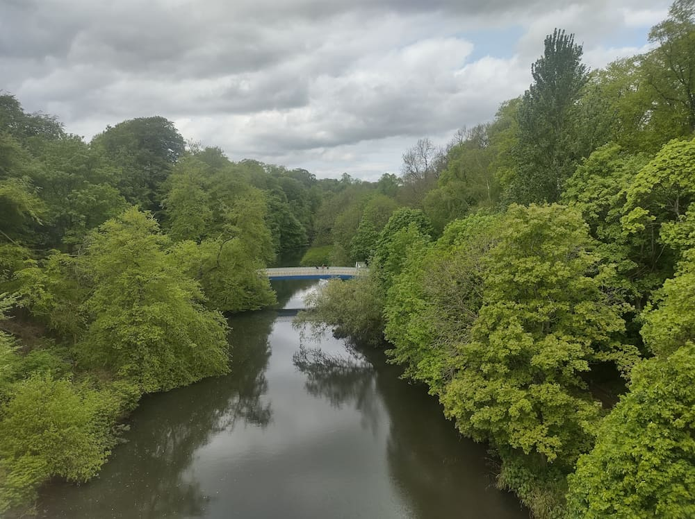
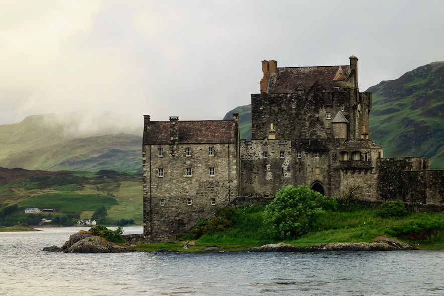
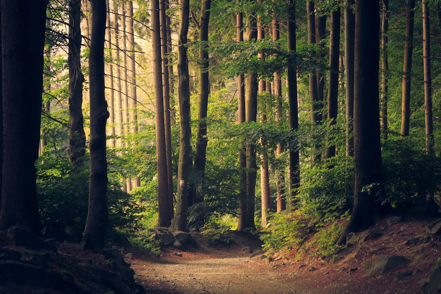
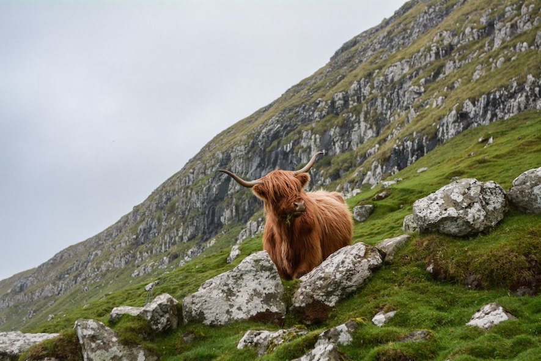

Welcome to Lochquarry Outdoor Centre
Located in the heart of the beautiful Argyll hills, Lochquarry Outdoor Centre offers exciting outdoor adventures for young people aged 6-18.
From hillwalking and archery to kayaking and climbing, there is something for everyone to enjoy. Our experienced instructors provide safe, fun and challenging activities designed for all abilities and experience levels.
Whether you are visiting with a school group, Scouts, Guides or friends, Lochquarry Outdoor Centre is the perfect place to explore the outdoors, build confidence and create unforgettable memories.
Activities at Lochquarry
We offer a wide range of exciting outdoor activities including:
- Land-based activities
- Water-based activities
- Rope-based activities




Visitor Review
“The kids had a ball and didn't want to leave” - Mr Evans, PE teacher
Book Your Adventure
To book your next adventure at Lochquarry, please phone:
01475 229 8311
Or email:
info@lochquarrycentre.co.uk
Address: Lochquarry Outdoor Centre, 1 Benmore, Dunoon, Scotland, PA23 8QU.